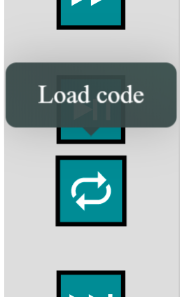
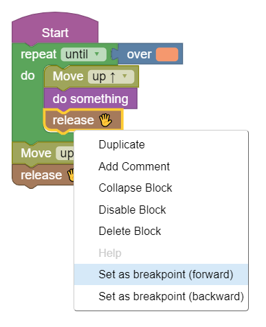

Welcome
This game is designed for students, as a first approach to
programming.
In the next slides you'll see how it works.
Created by Paolo longo
Rules
The game consists of blocks placed on a grid.Some of them are fully colored and other are translucent.
The game is solved when all the colored blocks are moved in the position of the corrisponding translucent one. Here's an example:

Rules
To solve the game you have to assemble the code.Through the code you can interact with the plane.
In the next slides all methods are explained.

example
here's how the game looks.
These are all the methods
you can use to
interact with the plane
- Move up
- Move down
- Turn right
- Turn left
- Take
- Release
- Over
- Taken
Move up & down
Move the plane one step forward or backward.
Turn right & left
Turn the plane right or left.
Take
If the plane is over a column of blocks the top block of the column will be removed, that
block is now taken.
That taken block will be under the plane, you can carry
it around the grid and then release it.
If you take two blocks in a row the first one will
be lost.
the gameBoard show which is the taken
block.
Release
Release the taken block under the plane. If the plane is over a column of blocks the taken block is released on the top.
Taken
Taken is a control for colored blocks.
You can
choose any color and this method will check if the taken
block is of that color.
If white is selected this method will check if there's a
taken block of any color.
Over
Over is a control for colored blocks.
You can choose
any color and this method will check if the plane is over a block of that color.
If white is selected this method will check if the plane
is over a block of any color.
If the plane is over a column of blocks the top block is checked.
The worlds
There are 4 worlds.
Each world is made up of playable levels.

The worlds
Every world has its difficulty from the easiest to the most difficult.
The last world contains an almost impossible level to solve.
The levels
Each level is composed of sub-levels.
To solve a
level the same code must complete each sub-level.
You can see each sub-level using the buttons below.
Load the code
Every time you write new code and want to try it, remember to load it before starting the game.
Debug
Select a block and use it as a breakpoint.The game will start (forward or backward) until that block is reached.
